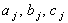

|
2.5. Метод прогонки - метод решения неявной разностной схемы
Суммируя вышеизложенное, проследим
последовательность действий, которую подразумевает метод прогонки при расчёте
значений функции u на (n + 1)-ом шаге по времени:
1) с помощью левого граничного условия определяются значения прогоночных
коэффициентов на 1-м шаге по координате х, т.е.  ; ;
2) по формулам (4.13) определяются значения прогоночных коэффициентов
для j = 2, ..., N - 1;
3) с помощью правого граничного условия определяется значение  ; ;
4) с помощью рекуррентного прогоночного соотношения (4.11) определяются значения
искомой функции u на (n + 1)-ом шаге по времени для j = N - 1, ..., 1.
Обратим внимание,
что определение прогоночных коэффициентов осуществляется за счёт цикла по j,
в котором значения j увеличиваются (что соответствует перемещению
слева направо на разностной сетке), в то время как при определении значений функции
u на (n + 1)-ом шаге по времени организуется цикл по j,
в котором значения j уменьшаются (что соответствует перемещению справа налево на
разностной сетке). Именно благодаря этим двум циклам (в первом из которых j
совершает пробег слева направо, а во втором - справа налево), данный метод решения
неявной разностной схемы и получил название метода прогонки.
Неявная разностная схема (4.6)
является абсолютно устойчивой. Однако это ещё не гарантирует сходимость её метода решения
(т.е., метода прогонки) к решению исходной дифференциальной задачи.
Теорема. Достаточным условием сходимости
метода прогонки к решению исходной дифференциальной задачи является выполнение следующего неравенства:
где  - коэффициенты из уравнения (4.10).
Легко видеть, что для разностной схемы (4.6) достаточное условие сходимости прогонки выполняется:
Отметим, что при k < 0* выполнение достаточного
условия сходимости прогонки (4.16) не является очевидным. Однако при этом спектральный
метод не будет гарантировать устойчивость неявной разностной схемы (4.6). Очевидно,
данный случай требует особого метода решения.
|